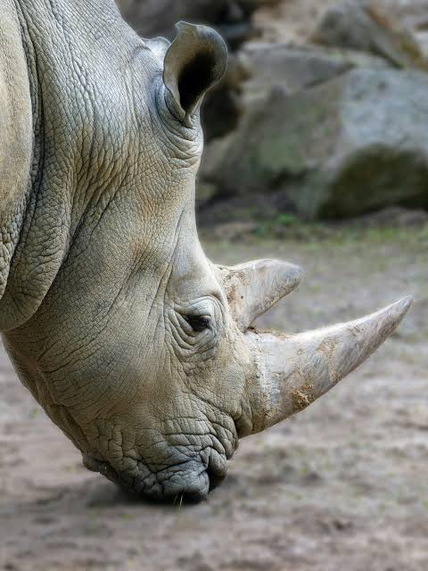
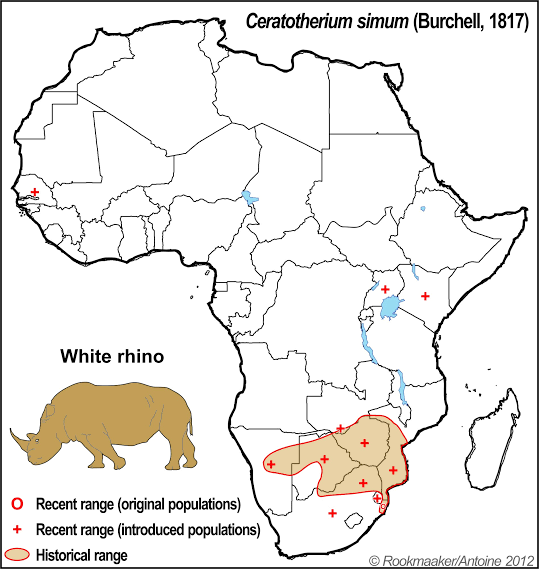
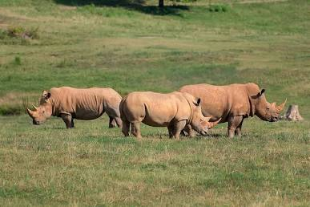
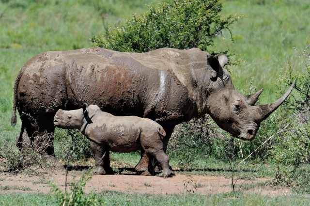
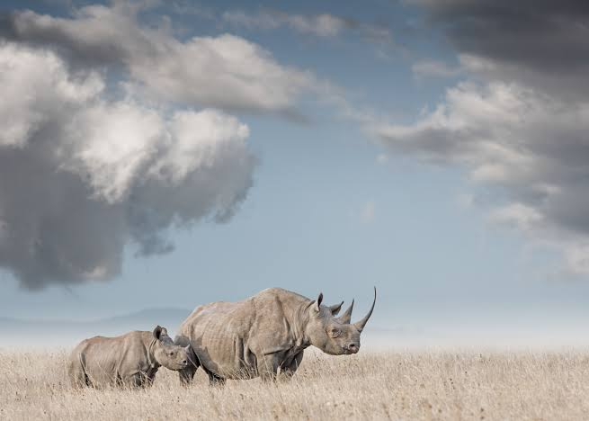
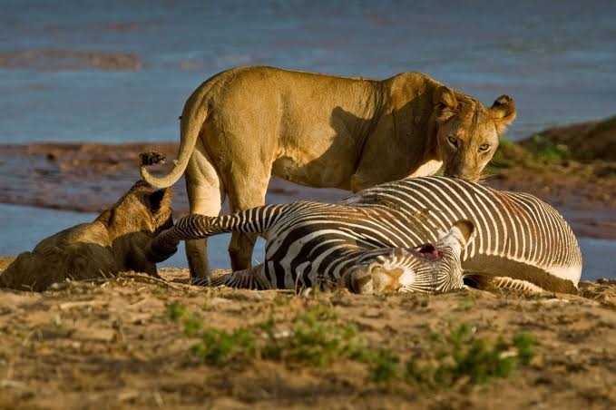

<!DOCTYPE html>
<html lang="en">
<head>
    <meta charset="UTF-8">
    <meta name="viewport" content="width=device-width, initial-scale=1.0">
    <title>Southern White Rhino Dossier</title>
</head>
<body>
    
</body>
</html>

<header>
<h1>Species Page: Southern White Rhino</h1>
</header>

<nav>
    <ul>
<li><a href="african-adventure.html">Home</a></li>
    </ul>
</nav>

<main>
    <article>
        <section id="basic-info">
            <h2>Scientific Information</h2>
            <p><strong>Common Name:</strong> Southern White Rhinoceros</p>
            <p><strong>Status/Conservation:</strong> Near Threatened <sup><a href="#ref1">[1]</a></sup></p>
            <section id="classification">
                <h2>Full Scientific Classification</h2>
                <table border="1">
                    <tr><th>Taxonomic Rank</th><th>Classification</th></tr>
                    <tr><td>Kingdom</td><td>Animalia</td></tr>
                    <tr><td>Phylum</td><td>Chordata</td></tr>
                    <tr><td>Subphylum</td><td>Vertebrata</td></tr>
                    <tr><td>Class</td><td>Mammalia</td></tr>
                    <tr><td>Subclass</td><td>Theria</td></tr>
                    <tr><td>Order</td><td>Perissodactyla</td></tr>
                    <tr><td>Family</td><td>Rhinocerotidae</td></tr>
                    <tr><td>Genus</td><td>Ceratotherium</td></tr>
                    <tr><td>Species</td><td>Ceratotherium simum</td></tr>
                </table>
            </section>
         <section id="physical-profile">
            <h2>Physical-profile</h2>
            <dl>
               <dt>Size range</dt>
               <dd> Head and body length measures 11 to 13 feet (3.4 to 4 meters), with a shoulder height of 5 to 6 feet (1.5 to 1.8 meters). </dd>

               <dt>Weight</dt>
               <dd> Weighs 4,000 to 5,000 pounds (1,800 to 2,300 kg), making it one of the largest land mammals on Earth.</dd>
               <dt>Identification Markings</dt>
               <dd>Identification Markings: Massive grey-to-brown bodies, a pronounced shoulder hump, two keratin horns on their snouts (with the front horn being significantly longer), and a wide, flat squared upper lip adapted specifically for grazing on short grasses.  
                <sup><a href="#ref2">[2]</a></sup></dd>
           </dl>
           
       </section>
       <section id="habitat-geography">
        <h2>Habitat & Geography</h2>
        <p>Habitats: Subtropical and tropical grasslands, savannas, and shrublands with open watering holes.
            Distribution: Primarily found in Southern Africa, with core populations concentrated in South Africa, Zimbabwe, Namibia, and Kenya.</p>
<h3>Distribution Map</h3>

        </section>
<section id="ecology and behavior">
    <h2>Ecology and Behavior</h2>
<h3>Feeding and Diet</h3>
<p>Strict mega-herbivorous grazers that use their broad, flat lips to sweep close to the ground, consuming vast quantities of short grasses.</p>
<ul>
    
</section>
<section id="communication and social behavior">
    <h2>Communication and Social Behavior</h2>
    <p>Living in small social groups known as crashes consisting of females and their calves, communicating through grunts, panting, snorts, and communal dung heaps used for territorial scent marking.</p>
    
</ol>
<h3>Life Cycle and Breeding Behaviors</h3>
                <p>Females produce a single calf every 2 to 3 years after a long gestation period of approximately 16 to 18 months, with calves remaining closely bonded to their mothers for up to three years.</p>
                
            
            
                <section id="Predators">
    <h2>Predators</h2>
    <p>Adult southern white rhinos have virtually no natural predators due to their immense size and horns, though vulnerable newborn calves are occasionally targeted by lions or hyenas. Poaching represents by far the most severe threat.</p>
    
</section>
    </article>
</main>